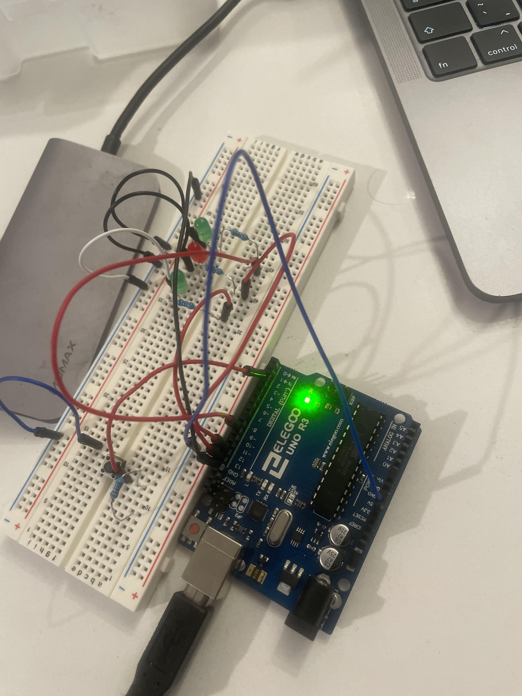

Here is the schematic for my circuit. I chose 220 ohm values for resistors because I worked with 2 red and 1 green LED In this we needed a 20 mA current and the voltage drop accross each was 1.8V. Using Ohm's law, I found out that the resistor value should be 160 ohm. 220 ohm was the nearest one. V = IR => R = V/I. R = 3.2/0.02 = 160 ohm. For the battery we use a 10k ohm resistor as the battery will require very high resistence and 10k is more than we will need.
This is my actual circuit on the breadboard. I used LEDs red,green,and red.
// the setup function runs once when you press reset or power the board
vconst int ledPin1 = 13;
const int ledPin2 = 9;
const int ledPin3 = 12;
int brightness = 0;
const int buttonPin = 2;
// Define variables for LED fading
int fadeAmount = 0;
void setup() {
// Initialize LED pins as OUTPUT
pinMode(ledPin1, OUTPUT);
pinMode(ledPin2, OUTPUT);
pinMode(ledPin3, OUTPUT);
// Initialize button pin as INPUT
pinMode(buttonPin, INPUT);
}
void loop() {
// Check if the button is pressed
if (digitalRead(buttonPin) == HIGH) {
// Fade in the LED
for (fadeAmount = 0; fadeAmount <= 255; fadeAmount += fadeAmount) {
analogWrite(ledPin2, fadeAmount);
delay(3);
}
// Fade out the LED
for (fadeAmount = 255; fadeAmount >= 0; fadeAmount -= fadeAmount) {
analogWrite(ledPin2, fadeAmount);
delay(3);
}
// Blink the other LEDs
digitalWrite(ledPin1, HIGH);
delay(500);
digitalWrite(ledPin1, LOW);
digitalWrite(ledPin3, HIGH);
delay(500);
digitalWrite(ledPin3, LOW);
}
}
Answers to additional questions: